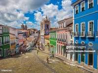

A Bahia é um estado vibrante e cheio de vida, localizado na região Nordeste do Brasil. É famosa por sua cultura rica, com uma mistura única de tradições africanas, indígenas e portuguesas. Salvador, a capital, é conhecida por seu centro histórico colorido, com igrejas coloniais, o Pelourinho, e suas festas animadas, como o Carnaval, que é um dos maiores do mundo. A Bahia também é famosa por suas praias paradisíacas, como as de Porto Seguro, Morro de São Paulo, Itacaré e Praia do Forte, que atraem turistas de todos os cantos. A culinária baiana é deliciosa e bastante diversa, com pratos como acarajé, vatapá, moqueca e cocada, que refletem a riqueza de sabores da região. Além disso, a Bahia possui uma música vibrante, com estilos como samba-reggae, axé e samba de roda, que fazem parte do seu jeito alegre de ser. É um estado que encanta pela sua cultura, natureza e hospitalidade. Se quiser saber mais, estou aqui para ajudar!
